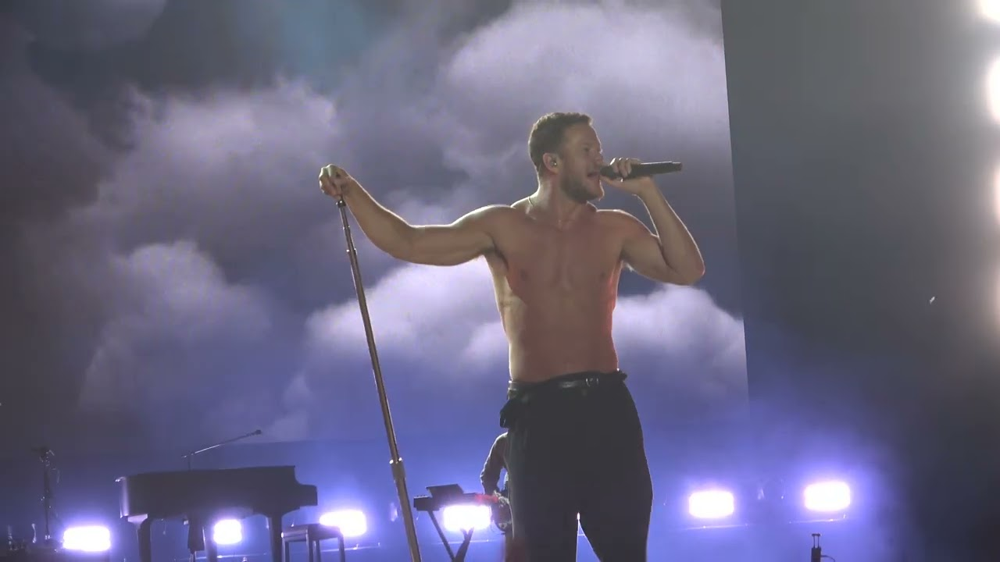
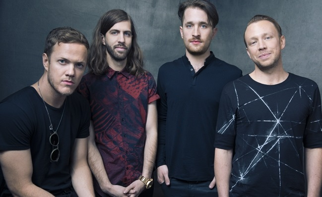

Világszerte ismert slágerek
Olyan dalokkal váltak híressé, mint a "Demons", "Believer", "Thunder" és a "Whatever It Takes".
Az Imagine Dragons egy amerikai pop-rock együttes, amely 2008-ban alakult Las Vegasban. A zenekar világszerte ismertté vált energikus előadásmódjával és fülbemászó dalaival.
Az Imagine Dragons-t Dan Reynolds énekes alapította, aki a Brigham Young Egyetemen ismerkedett meg a későbbi tagokkal. Az együttes első éveiben helyi klubokban lépett fel, majd 2011-ben kiadták első EP-jüket, amely meghozta számukra az áttörést.
2012-ben jelent meg első nagylemezük, a Night Visions, amelyen olyan slágerek szerepeltek, mint a "It's Time" és a világsikert arató "Radioactive". Az album hatalmas sikert aratott, és az Imagine Dragons az egyik legismertebb modern rockzenekarrá vált.
A zenekar azóta több sikeres albumot adott ki, például a Smoke + Mirrors (2015), Evolve (2017) és Origins (2018) című lemezeket. Számos díjat nyertek, köztük Grammy-díjat is.
Az Imagine Dragons zenéje gyakran ötvözi a rock, pop és elektronikus elemeket. A zenekar tagjai aktívan részt vesznek jótékonysági kezdeményezésekben is.

Olyan dalokkal váltak híressé, mint a "Demons", "Believer", "Thunder" és a "Whatever It Takes".

Az alapító Dan Reynolds mellett Wayne Sermon (gitár), Ben McKee (basszusgitár) és Daniel Platzman (dob) alkotják a zenekart.